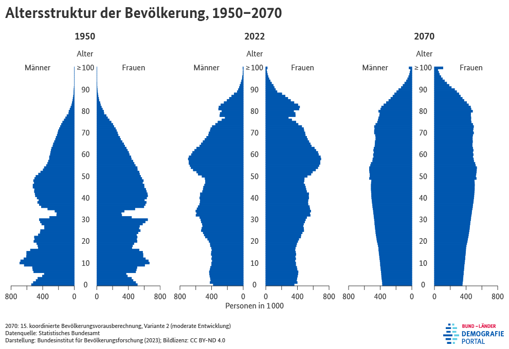

Es gab in den letzten Wochen und Monaten einige Nachrichten, die mir Sorgen machen. Ich muss mir das von der Seele schreiben.
Klimawandel
Die steigenden Wassertemperaturen in den Meeren führen zu immer stärkeren Stürmen. Zugleich nehmen Dürren zu. Das hat Auswirkungen auf die Lebensmittelversorgung.
Hier noch ein paar exemplarische Artikel:
- 25.12.2024: Grönlands Eis schmilzt jedes Jahr um fast 200 Kubikkilometer
- 24.12.2024: Klimawandel: 2024 wird das wärmste Jahr seit Beginn der Aufzeichnungen
Wir müssen also dringend unsere CO2-Emissionen reduzieren. Das bedeutet vor allem Elektrifizierung im Verkehr und in der Wärmeversorgung. Das hat weltweit massive Auswirkungen auf die Wirtschaft:
- Batterie-Elektrische Autos (BEVs) werden Verbrenner (ICEs) verdrängen: 2024 hingen 773.000 Arbeitsplätze in Deutschland direkt an der Autoindustrie.[6] Zählt man noch die Zulieferer dazu, sind es 1.75 Millionen Arbeitsplätze.[7] Das sind etwa 4% der deutschen Arbeitsplätze. Allerdings sind diese 4% überdurchschnittlich gut bezahlt. Mit dem Festklammern an Verbrennern können wir zwar unsere Marktsegmente bei den Verbrennern halten, allerdings wird der Markt für Verbrenner schrumpfen. Das ist unser Nokia / Kodak Moment.
- Öl- und Gasförderung: Die Nachfrage nach Öl und Gas wird sinken. Gleichzeitig
bleibt die Förderkapazität hoch. Das führt zu sinkenden Preisen. Ab einem
gewissen Punkt wird es für viele Förderer nicht mehr rentabel sein, zu
fördern. Das bedeutet, dass Förderer pleite gehen. Damit sinkt die
Förderung wieder und die Preise steigen. Das ist für Kuwait, Saudi-Arabien,
Oman, die Vereinigten Arabischen Emirate, Katar und Bahrain ein Problem.[8]
Interessanter wäre es zu wissen wie hoch der Anteil der Fossilen Industrien
in den USA und Europa wäre, aber diese Zahlen sind schwer zu finden. Mit ein
paar Branchenriesen kann man einen ersten Eindruck erhalten:
- Saudi Aramco, Saudi-Arabien: 604 Mrd. USD (2022)
- Shell, England: 323 Mrd USD (2023)
- China National Petroleum Corporation, China: 266 Mrd. Euro (2020)
- BP, England: 241 Mrd USD (2022)
- TotalEnergies, Frankreich: 237 Mrd USD (2023)
- ExxonMobil, USA: 178 Mrd USD (2020)
- Chevron, USA: 155 Mrd USD (2020)
- Erze werden wichtiger: Für die Produktion von Batterien werden Lithium, Kobalt, Nickel und Graphit benötigt. Niemand weiß welche Erze in Zukunft wichtig sein werden. Ähnlich wie in der Autoindustrie wird es hier eine Verlagerung von Öl- und Gas zu den Batterie-Rohstoffen geben. Mit der Zeit wird Recycling wichtiger werden.
Der Rückgang der Kohleförderung und die Krise der Stahlindustrie hat im Ruhrgebiet zu einer massiven Arbeitslosigkeit geführt. Das hat die Region bis heute nicht überwunden. Ähnliches werden wir nun weltweit erleben. China hat sich mit der Förderung der Solarindustrie und Elektroautos gut positioniert. In Deutschland schießen wir uns mit dem Festhalten an Verbrennern, abrupten neuen Förderungen und deren plötzlichen Streichungen ins Knie:
- Altmaier-Knick (2012): Die Deckelung und Reform des Erneuerbare-Energien-Gesetzes (EEG) hat zu einem Einbruch im Ausbau der Erneuerbaren Energien geführt. Das hat die deutsche Solarindustrie zerstört.
- 10H-Regelung (2014): Horst Seehofer hat diese Regelung eingeführt, um den Ausbau von Windkraftanlagen zu bremsen. Diese Regelung brachte den Windkraftausbau in Bayern praktisch zum Erliegen.[9]
- E-Auto-Förderstopp (2023): Die Bundesregierung hat die Förderung von Elektroautos gestoppt. Das hat zu einem Einbruch der Verkaufszahlen geführt.
- Deutschland als unzuverlässiger Partner (2024): Wir verhalten uns weder intern
noch nach außen verlässlich. Dieses Wackelverhalten ist als "German Vote"
bekannt. Es führt dazu, dass Investoren sich konservativ verhalten und kein
Risiko eingehen. Wer weiß schon was (politisch) morgen gilt.
- Verbrenner-Aus: Deutsche Blockade wiederholt sich beim LKW: FDP blockiere die Zustimmung zu den neuen CO2-Flottengrenzwerten für Lkw
- Wärmepumpen: Die BILD-Zeitung hat in vielen Artikeln gegen Wärmepumpen gewettert. Dies hat zu Fehlinvestitionen geführt, welche sich in den kommenden Jahren rächen werden. Da große Teile der Politik keine Verbote aussprechen wollen sondern auf einen Preismechanismus setzen, muss der CO2-Preis steigen. Das bedeutet, das Leute die sich jetzt eine neue Ölheizung einbauen, in den kommenden Jahren mit hohen Kosten rechnen müssen. Das so verlorene Geld kann nicht für andere Investitionen genutzt werden. Alternativ, und leider wahrscheinlicher, wird die Politik den Preisanstieg abfedern - und somit das Ziel der CO2-Reduktion bewusst sabotieren.
Demografischer Wandel
Altersstruktur
Deutschland wird älter.

Das führt insbesondere dazu, dass das Verhältnis zwischen Einzahlern in das Gesundheits- und Rentensystem und den Empfängern schlechter wird. Wenn wir Pflegende zumindest gleich gut wie früher bezahlen wollen und auch die Leistungen der Kassen für die Kranken/Pflegebedürftigen gleich bleiben sollen, dann müssen Arbeitnehmer mehr einzahlen.
Das führt zu einem Wohlstandverlust.
Bekämpfen kann man das durch folgende Maßnahmen:
- Zuwanderung: Wenn mehr Menschen in Deutschland arbeiten, dann zahlen auch mehr Menschen in die Sozialsysteme ein.
- Automatisierung: Produktivitätssteigerungen können steigende Kosten auffangen. Im öffentlichen Dienst muss man Prozesse digitalisieren, das bedeutet sie zuerst zu vereinfachen und über kommunale Grenzen hinweg zu standardisieren. Dann kann man sie möglichst komplett digital abbilden. Ohne Papier, ohne Bruch in der digitalen Kette. Das spart Zeit und Geld, weil man viele Prüfungen nicht mehrfach machen muss. Im besten Fall können sie auch komplett automatisch laufen. Allerdings bekommen wir das seit Jahrzehnten nicht hin. Wieso?
- Gesundheitsförderung: Wenn die Menschen gesünder sind, dann fallen weniger Kosten an. Erhöhte Preise für Alkohol (vgl. Finnland), Zucker, und Tabak könnten ein Schritt sein. Kurse zur gesunden Ernährung. Japan macht das vor.
Es bereitet mir Sorge, dass die meisten Parteien in Deutschland nicht bereit sind, diese Maßnahmen zu ergreifen. Viele arbeiten sogar aktiv dagegen.
Räumliche Verteilung
Ein weiterer Aspekt des demografischen Wandels ist die räumliche Verteilung der Menschen. Wo wohnen wir?
Die folgende Grafik von Wikipedia Commons zeigt es sehr schön:
{kind=link}

Auch über die Liste der deutschen Bundesländer nach Bevölkerungsentwicklung kann man ein paar Eindrücke gewinnen.
Mal zusammengefasst:
- Große Städte wie Berlin, Hamburg, München, Köln, Frankfurt, Stuttgart, Düsseldorf und Dortmund wachsen.
- Ländliche Regionen verlieren Einwohner.
- Der Süden (Bayern und Baden-Württemberg) wächst.
- Der Osten (Sachsen, Sachsen-Anhalt, Thüringen und Mecklenburg-Vorpommern) schrumpft.
Das Problem dabei ist der Wohnraummangel in den Großstädten.
Populismus und Rechtsextremismus
Ich beobachte Weltweit, dass Populisten mehr Gehör finden. Unter Populismus verstehe ich Politiker, die einfache Lösungen für komplexe Probleme anbieten. Lösungen, die einfach nicht funktionieren können und daher nur solange vorgeschlagen werden, wie man sie nicht einlösen muss. Ein Beispiel ist "Mehr Geld für die Krankenkassen beim Brexit". Oder "Steuersenkungen ohne Einsparungen und ohne neue Schulden".
Unter "politisch rechts" verstehe ich grundsätzlich konserative Politik. Das ist nicht per se schlecht, resultiert im Extremfall aber in Nationalismus und Rassismus, Antisemitismus, Homophobie, Fremdenfeindlichkeit, Sexismus, Geschichtsrevisionismus, Klimawandel-Leugnung, Impfgegner. Häufig auch gepaart mit Autoritarismus und Verschwörungstheorien.
Deutschland
In Deutschland hat die AfD in aktuellen Umfragen zwischen 17% und 19.5%. Die Partei fällt mir durch folgendes auf:
- Ablehnung von Europa: "Der gemeinsame EURO ist eine grundlegende Fehlkonstruktion."[10] sowie Dexit? Die AfD will, dass Deutschland die EU verlässt
- Steuer-Populismus: Grund-, Erbschafts- und Schenkungssteuer soll wegfallen, ein höherer Grundfreibetrag (Video), Solidaritätszuschlag und Kalte Progression abschaffen. Steuergeschenke in Höhe von 149 Mrd EUR. Und die Schuldenbremse soll bleiben. Das passt nicht zusammen. Entweder sind sie naiv, dumm, oder sie lügen.
- Klimawandel-Leugnung AfD fordert Aufkündigung aller Klimavereinbarungen
- "Besseres Verhältnis zu Russland [...] Die USA bleiben unser Partner. Russland soll es werden. Die AfD setzt sich deshalb für ein Ende der Sanktionen und eine Verbesserung der Beziehungen zu Russland ein."[10] Klar wäre es schön, wenn es wieder Frieden geben würde. Aber Russland hat sich nicht ans Budapester Memorandum gehalten. Auch nicht ans Protokoll von Minsk. Wenn wir nun die Sanktionen aufheben hindert Russland nichts daran eine Weile die Wunden zu lecken und sich weiter in Richtung Europa zu vergrößern. Appeasement-Politik funktioniert nicht. Leider.
- Gegen Corna-Impfungen waren sie auch
USA
Mit der erneuten Wahl von Trump werden wir wohl viel mehr in dieser Richtung sehen:
- Kanada-Annexion[13]
- Grönland-Annexion[1]
- Mexiko-Invasion[2][3]
- Panama-Kanal Übernahme[4]
- Fracking-Boom[5] und Klimawandel-Leugnung[11] und ignorieren von Umweltschutz[12]
Europa
- Frankreich: Rassemblement national
- Niederlande: Partei für die Freiheit / Geert Wilders
- Österreich: FPÖ / Herbert Kickl
- Rumänien: Neuwahlen nach Wahlbetrug
Wirtschaft
Die meisten Menschen in Deutschland und den USA spüren die steigenden Preise für Mieten und Lebensmittel. Wir nennen das Inflation, aber die Analyse für die Ursachen bzw. die Möglichkeiten zur Bekämpfung sind sehr Unterschiedlich. Viele Menschen scheinen zu denken, dass es ein Geldproblem ist. Nur dann ist es Folgerichtig die Zinsen zu erhöhen, damit weniger Geld in Umlauf kommt. Meine Analyse ist eine andere: Wir haben ein Produktionsproblem. Die Weltwirtschaft wurde durch die Corona-Pandemie und damit zusammenhängende Isolationsmaßnahmen, die Ever Given im Suezkanal, sowie den Krieg zwischen Russland und der Ukraine und den von der EU verhängten Sanktionen gestört.
Und es wird wohl auch so weitergehen:
- Handelskriege: Trump will Zölle mit Mexiko und Kanada[14], China[15] und mindestens 10% auf jegliche Importe einführen[16].
- Strukturwandel durch Elektrifizierung: VW musste wegen Absatz-Problemen Werke in Deutschland schließen. Solange wir uns nicht auf Elektroautos einigen, wird das weiter gehen. So ähnlich wie der Markt an Pferdekuschen zwar dominiert werden kann, ist er halt doch nicht relevant. Wir können den Verbrennermarkt dominieren, aber die größe des Verbrennermarktes wird in den nächsten 20 Jahren einbrechen.
- Strukturwandel durch Automatisierung: ChatGPT hat eindrucksvoll gezeigt, dass Rechercheaufgaben von Software übernommen werden kann. Wir werden in den nächsten Jahren beobachten wie Büro-Jobs zuerst wesentlich effizienter von hochqualifizierten Arbeitskräften mit KI-Unterstützung erledigt werden. Dann werden weniger Jobs in dem Bereich benötigt. Und irgendwann werden manche dieser Jobs auch komplett verschwinden. Wir reden immer vom Fachkräftemangel als wäre es ein allgemeiner Arbeitskräftemangel. Ist es nicht. Wir haben 2.6 Millionen Arbeitslose, aber nur etwa 1.3 Millionen offene Stellen (die Zahlen der Bundesagentur für Arbeit sind deutlich niedriger, weil nicht jede Firma offene Stellen der Bundesagentur meldet). Das wird noch extremer werden. Wenn wir weiter das Märchen über "die faulen Arbeitslosen" erzählen und glauben, werden die sozialen Spannungen weiter zunehmen.
Einzelnachweise
- 1↑ Trump says ownership of Greenland 'is an absolute necessity' in NBC News, 23.12.2024
- 2↑ Asawin Suebsaeng, Andrew Perez: Team Trump Debates ‘How Much Should We Invade Mexico?’ in Rolling Stone, 27.11.2024.
- 3↑ Alexandra Ulmer: Trump threatens to designate Mexican cartels as terrorists in Reuters, 22.12.2024
- 4↑ Panama: Protesters say 'enemy' Trump must leave canal alone in DW, 25.12.2024.
- 5↑ Leah Sarnoff: What Trump's 'drill, baby, drill' fracking agenda could look like in abcnews, 20.11.2024.
- 6↑ Warum die Autoindustrie so wichtig ist, 23.09.2024.
- 7↑ Pressemitteilung Nr. 139 vom 9. April 2019 auf destatis.de
- 8↑ René Muschter: Golfregion: Anteil der Erdölrenditen am Bruttoinlandsprodukt (BIP) der Staaten des Golf-Kooperationsrats in den Jahren 2011 bis 2021 auf statista.com, 29.10.2024
- 9↑ Ausbau in Bayern im Energieatlas Bayern, abgerufen am 25.12.2024.
- 10↑ Grundsatzprogram auf auf.de
- 11↑ Trump picks oil industry executive, climate change denier to lead Energy Department, 17.11.2024
- 12↑ Trump Says Companies Investing $1 Billion In U.S. Will Soar Through Environmental Regulations, 10.12.2024
- 13↑ Canadians respond to Trump's jibe that country could become 51st state, 18.12.2024
- 14↑ Mexico and Canada weigh potential fallout of Trump tariffs
- 15↑ Breaking Down Trump’s Tariffs on China and the World, in Charts, 03.12.2024.
- 16↑ Jasper Jolly, Lisa O'Carroll: Trump’s trade tariffs: how protectionist US policies will hit German carmakers im Guardian, 09.11.2024.